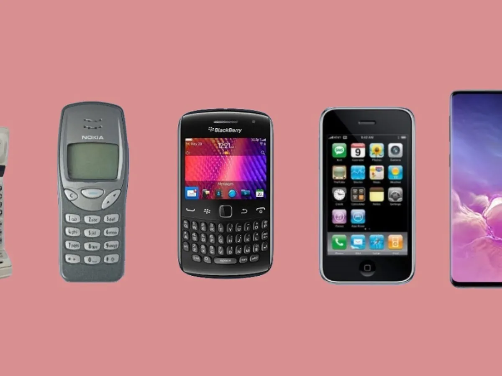

1-📞 DISPOSITIVOS ANTIGUOS (TELÉFONOS
BÁSICOS O PRIMEROS CELULARES)
¿Quién inventó
el primer teléfono móvil?

El teléfono es un dispositivo de telecomunicación
creado para transmitir señales acústicas a larga distancia por
medio de señales eléctricas. Fue inventado por el italiano Antonio Meucci,
quien en 1854 construyó su primer prototipo, aunque no formalizó su patente
por dificultades económicas, presentando solo una breve descripción de su
invento en la Oficina de Patentes de Estados Unidos en el año de 1871.
Años después, en 1876, el escocés Alexander Graham Bell fue el primero en
patentarlo formalmente, y durante muchos años, junto a Elisha Gray, fueron
considerados los inventores del teléfono.
El 11 de junio de 2002, el Congreso de los Estados Unidos de América aprobó
la resolución 269, en la que se reconoce que el verdadero inventor del teléfono
fue Antonio Meucci, que lo llamó teletrófono.[
Antonio Meucci (1808-1889) fue el primer inventor del «teletrófono»,
posteriormente bautizado como «teléfono».[3]
En 1854,[4] Meucci construyó un aparato para conectar su oficina (en la planta
baja de su casa) con su dormitorio (ubicado en el segundo piso), debido a que su esposa
estaba inmovilizada por el reumatismo. Sin embargo, Meucci carecía del dinero
suficiente para patentar su invento, aunque sí patentó otros inventos que él creía
más rentables, como un filtro económico para la depuración del agua y el uso de la parafina en
la fabricación de velas (que hasta ese momento se fabricaban con grasa de animales, muy contaminantes y sucias).[5]
En 1860 Antonio Meucci hizo público su invento, el teletrófono. En una demostración pública,
la voz de un cantante se trasmitió a una considerable distancia. La prensa italiana de Nueva York publicó una descripción del invento y un tal Sr. Bendelari se llevó a Italia una copia del prototipo y la documentación necesaria para producirlo allí, pero no se volvió a saber de él, como tampoco se materializó ninguna de las ofertas que surgieron tras la demostración.[6]
Consciente de que alguien podía robarle la patente, pero incapaz de reunir los 250 dólares
(unos 7900 dólares de 2016)[7] que costaba la patente definitiva, tuvo que conformarse con
un cáveat (‘aviso’, trámite preliminar de presentación de documentación para la patente,
con vigencia de un año) que registró el 28 de diciembre de 1871 y que pudo permitirse
renovar ―por 10 dólares (314 dólares de 2016)―[7][8] solo en 1872 y 1873.[6]
En cuanto tuvo el acuse de recibo de la Oficina de Patentes volvió a intentar demostrar
el potencial de su invento. Para ello ofreció una demostración del «telégrafo parlante»
a un empresario llamado Edward B. Grant, vicepresidente de una filial de la Western Union
Telegraph Company. Cada vez que Meucci trataba de avanzar se le decía que no había hueco
para su demostración, así que a los dos años, Meucci pidió que le devolvieran su material,
a lo que le contestaron que se había perdido.[9]
En 1876, Alexander Graham Bell registró una patente que realmente no describía el teléfono,
pero lo mencionaba como tal.[10] Cuando Meucci ―que vivía cerca de Nueva York― se enteró,
pidió a un abogado que reclamara ante la Oficina de Patentes de los Estados Unidos en Washington,
algo que nunca sucedió. Sin embargo, un amigo que tenía contactos en Washington se enteró de que
toda la documentación referente al telégrafo parlante registrada por Meucci se había perdido.[9]
Una investigación posterior puso en evidencia un delito de prevaricación por parte de algunos
empleados de la Oficina de Patentes sobornados por la compañía de Bell. En un litigio posterior
entre la empresa Bell Telephone Company (creada en 1877) y Western Union,
afloró que existía un acuerdo por el cual Bell pagaría a la Western Union un 20 % de los beneficios derivados de la comercialización de su invento durante 17 años.[11]
Diez años después, en un proceso legal de 1886,
Meucci tuvo que demandar incluso a su propio abogado,
sobornado por el poderoso Bell. Sin embargo Meucci supo
hacer entender al juez que no cabía duda en cuanto a la
autoría del invento registrado. A pesar de la declaración
pública del entonces Secretario de Estado: «existen suficientes
pruebas para dar prioridad a Meucci en la invención del teléfono».[11]
A pesar de que el Gobierno de Estados Unidos inició acciones
legales por fraude contra la patente de Alexander Graham Bell,
el proceso embarrancó en el arenal de los recursos por los
abogados de Bell, hasta cerrarse en 1889 debido a la muerte de Meucci.[9]
Meucci falleció pobre y amargado y jamás vio la gloria y
el reconocimiento de su talento, el cual chocó con
su escaso conocimiento del inglés y su poca desenvoltura
ante las artimañas legales y los ingentes intereses económicos de
las grandes corporaciones de Estados Unidos.[12]
El 11 de junio de 2002, el Boletín Oficial de
la Cámara de Representantes de los Estados Unidos
publicó la Resolución n.º 269, por la que se honra la vida y
el trabajo del inventor italiano. En la misma se reconoce que
fue Antonio Meucci en vez de Alexander Graham Bell quien inventó el
teléfono.[13] Reconoció además que Meucci demostró y publicó su invento en 1860 y concluye con un reconocimiento a su autoría en dicha invención.
FUENTES CONFIABLES
CADA PAGINA ESTA ECHA PARA INFORMAR ALAS PERSONAS QUE QUIEREN SABER SOBRE LOS DISPOSITIVOS
DE HOY EN DIA LA INFORNACION ES MIXTA PARA CUALQUIERE PERSONAS MAYORES Y JOVENES